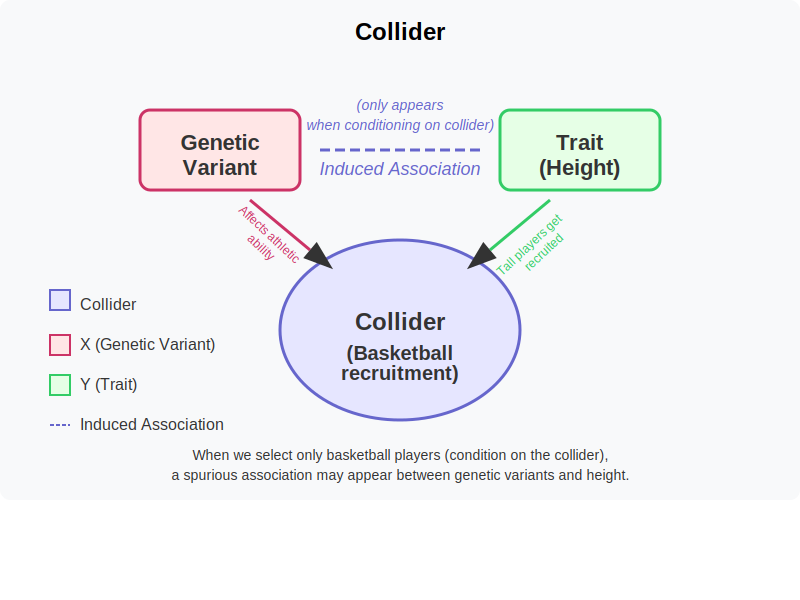

Collider¶
A collider is a variable that is influenced by two other variables of interest, creating a spurious association between them when we condition on (select or control for) the collider in our analysis.
Graphical Summary¶

Key Formula¶
The key formula for the concept of a collider is represented in a causal diagram as:
Where:
\(C\) is the collider variable
\(X\) is one cause of the collider
\(Y\) is another cause of the collider
The arrows (→) indicate the direction of causal influence
This diagram illustrates that a collider (\(C\)) is a variable that is caused by both the exposure (\(X\)) and the outcome (\(Y\)), creating a situation where \(X\) and \(Y\) both flow into \(C\).
A collider is a variable that is influenced by two other variables in a causal pathway. When we condition on (adjust for, stratify by, or select based on) a collider, we can induce a spurious association between its causes, even if they were originally independent.
Technical Details¶
Conditioning on a collider can introduce bias in the estimation of the relationship between its causes. This is often called collider bias or selection bias.
In formal causal inference terminology, conditioning on a collider creates a situation where:
Where conditioning on \(C\) creates a non-causal association between \(X\) and \(Y\). This inequality shows that the association between \(X\) and \(Y\) differs when we condition on the collider.
Key characteristics of collider bias:
Induced Association: Conditioning on a collider can create an association between variables that are causally independent
Berkson’s Paradox: A classic example of collider bias in epidemiology
Selection Bias: Often occurs when study participants are selected based on criteria affected by both exposure and outcome
M-Bias: A specific pattern in DAGs where conditioning on a collider creates a biased path
Unlike confounders which should be controlled for in analyses, colliders should not be controlled for when estimating the causal effect of interest.
Example¶
This example demonstrates how conditioning on a collider can create spurious associations in genetic studies. We create a simple dataset with:
Genetic variants for 5 individuals
Height measurements
Basketball recruitment status (the collider)
We perform two analyses:
A standard analysis examining associations between genetic variants and height in the full population
A biased analysis examining these same associations only among recruited basketball players
The example shows how basketball recruitment, which is influenced by both genetic variants and height, can create misleading associations when we restrict our analysis to only recruited players. This illustrates why we should avoid conditioning on colliders when estimating causal effects in genetic studies.
# Clear the environment
rm(list = ls())
# Define genotypes for 5 individuals at 3 variants
# These represent actual alleles at each position
# For example, Individual 1 has genotypes: CC, CT, AT
genotypes <- c(
"CC", "CT", "AT", # Individual 1
"TT", "TT", "AA", # Individual 2
"CT", "CT", "AA", # Individual 3
"CC", "TT", "AA", # Individual 4
"CC", "CC", "TT" # Individual 5
)
# Reshape into a matrix
N <- 5 # number of individuals
M <- 3 # number of variants
geno_matrix <- matrix(genotypes, nrow = N, ncol = M, byrow = TRUE)
rownames(geno_matrix) <- paste("Individual", 1:N)
colnames(geno_matrix) <- paste("Variant", 1:M)
alt_alleles <- c("T", "C", "T")
ref_alleles <- c("C", "T", "A")
# Convert to raw genotype matrix using the additive / dominant / recessive model
Xraw_additive <- matrix(0, nrow = N, ncol = M) # dount number of non-reference alleles
rownames(Xraw_additive) <- rownames(geno_matrix)
colnames(Xraw_additive) <- colnames(geno_matrix)
for (i in 1:N) {
for (j in 1:M) {
alleles <- strsplit(geno_matrix[i, j], "")[[1]]
Xraw_additive[i, j] <- sum(alleles == alt_alleles[j])
}
}
X <- scale(Xraw_additive, center = TRUE, scale = TRUE)
# assign observed height for the 5 individuals
Y_raw <- c(180, 160, 158, 155, 193)
Y <- scale(Y_raw)
# assign the recruitment status (to a basketball team) for the 5 individuals
recruited <- c(1, 0, 0, 0, 1)
# first we conduct the OLS like we did in the previous section of summary statistics
# Perform GWAS-style analysis: Test each SNP independently using OLS
sumstats <- data.frame(
SNP = paste0("rs", 1:M),
CHR = c(1, 1, 2), # Example chromosome assignments
BP = c(1000, 2000, 5000), # Example base pair positions
ALT = alt_alleles, # Effect allele
REF = ref_alleles, # Reference allele
N = rep(N, M), # Sample size
BETA = numeric(M), # Effect size
SE = numeric(M), # Standard error
Z = numeric(M), # Z-score
P = numeric(M) # P-value
)
for (j in 1:M) {
SNP <- X[, j] # Extract genotype for SNP j
model <- lm(Y ~ SNP) # OLS regression: Trait ~ SNP
summary_model <- summary(model)
# Store results in standard format
sumstats$BETA[j] <- summary_model$coefficients[2, 1] # Effect size
sumstats$SE[j] <- summary_model$coefficients[2, 2] # Standard error
sumstats$Z[j] <- summary_model$coefficients[2, 3] # t-statistic (equivalent to Z-score)
sumstats$P[j] <- summary_model$coefficients[2, 4] # P-value
}
# Now perform the analysis adjusting for the collider (team recuirtment status)
# Perform GWAS-style analysis: Test each SNP independently using OLS
sumstats_adjusted <- data.frame(
SNP = paste0("rs", 1:M),
CHR = c(1, 1, 2), # Example chromosome assignments
BP = c(1000, 2000, 5000), # Example base pair positions
ALT = alt_alleles, # Effect allele
REF = ref_alleles, # Reference allele
N = rep(N, M), # Sample size
BETA = numeric(M), # Effect size
SE = numeric(M), # Standard error
Z = numeric(M), # Z-score
P = numeric(M) # P-value
)
for (j in 1:M) {
SNP <- X[, j] # Extract genotype for SNP j
model_adjusted <- lm(Y ~ SNP + recruited) # OLS regression: Trait ~ SNP + collider
summary_model_adjusted <- summary(model_adjusted)
# Store results in standard format
sumstats_adjusted$BETA[j] <- summary_model_adjusted$coefficients[2, 1] # Effect size
sumstats_adjusted$SE[j] <- summary_model_adjusted$coefficients[2, 2] # Standard error
sumstats_adjusted$Z[j] <- summary_model_adjusted$coefficients[2, 3] # t-statistic (equivalent to Z-score)
sumstats_adjusted$P[j] <- summary_model_adjusted$coefficients[2, 4] # P-value
}
# Print summary statistics in standard format (before adjusting for collider)
print("GWAS Summary Statistics:")
sumstats
# Print summary statistics in standard format (after adjusting for collider)
print("GWAS Summary Statistics after considering collider:")
sumstats_adjusted
[1] "GWAS Summary Statistics:"
| SNP | CHR | BP | ALT | REF | N | BETA | SE | Z | P |
|---|---|---|---|---|---|---|---|---|---|
| <chr> | <dbl> | <dbl> | <chr> | <chr> | <dbl> | <dbl> | <dbl> | <dbl> | <dbl> |
| rs1 | 1 | 1000 | T | C | 5 | -0.5000913 | 0.49996955 | -1.000244 | 0.390901513 |
| rs2 | 1 | 2000 | C | T | 5 | 0.8525024 | 0.30179448 | 2.824778 | 0.066475513 |
| rs3 | 2 | 5000 | T | A | 5 | 0.9866667 | 0.09396605 | 10.500246 | 0.001844466 |
[1] "GWAS Summary Statistics after considering collider:"
| SNP | CHR | BP | ALT | REF | N | BETA | SE | Z | P |
|---|---|---|---|---|---|---|---|---|---|
| <chr> | <dbl> | <dbl> | <chr> | <chr> | <dbl> | <dbl> | <dbl> | <dbl> | <dbl> |
| rs1 | 1 | 1000 | T | C | 5 | 0.1351598 | 0.2487332 | 0.5433927 | 0.64132893 |
| rs2 | 1 | 2000 | C | T | 5 | 0.2962084 | 0.2502674 | 1.1835681 | 0.35819875 |
| rs3 | 2 | 5000 | T | A | 5 | 0.7028311 | 0.1924149 | 3.6526847 | 0.06745521 |